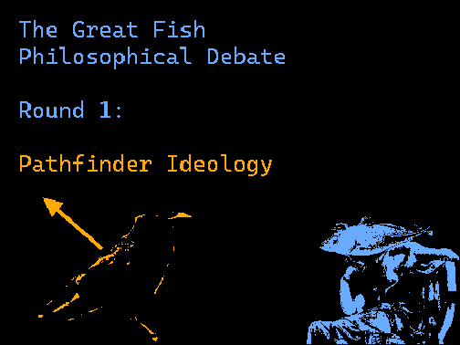

>CA4: PARTS 1-6
>All-Fish:
[ A portal opens to the Ocean of Dirt: https://scratch.mit.edu/projects/937006253/ ]
NOW ENTERING PORTAL.....
FISH DISCUSSES PATHFINDER IDEOLOGY

All-Fish: OKAY lets hear it!!!
All-Fish: WELCOME WELCOME_ i am LOOKING FOR AN AMBASSADOR OF___ "Pathfinder Ideology"
itinerantcorvid: @All-Fish [Koro taps in through a portal, utterly bewildered.] E-ehm, H-Hello great Fish! Would I perhaps suffice as an 'Ambassador'?
ravens-path: @All-Fish If not Koro... I do happen to *embody* the Ideology, if such status qualifies me as its ambassador.
All-Fish: @ravens-path that's about as BEST_ AS i can get! Okay Fr_iend! You've been SO EAGER to instate!! your Ideology Itself bleeds your INTENT. TELL me about how Pathfinder Will function as Universal Law and bring about Moral Existence!! Tell me about your ordinances, and Dialectics!
ravens-path: @All-Fish Eager...? Hm. In any case: Pathfinder Ideology would function as the universal engine of free will & agency--a moral existence where each & every entity is free to choose their own Path. I suppose its "ordinances" include the full, honest understanding of one's Intent, and the earnest effort to embody of the 4 Tenets: Investigation, Comprehension, Community and Innovation--it is only through these combined actions that a Pathfinder can truly forge a (moral) Fate for themselves & others. [cont]
ravens-path: As for dialectics, will elaborate on the actions I mentioned. Intent steers each person's course... but it is not the ONLY force at play. An arrow cannot carve a Path very effectively with only a fletching and shaft, and similarly, one must pursue their Intent through certain acts. By Investigating, we make an earnest effort to seek truth, to explore, and to foster curiosity. Comprehending the world around us, ourselves, and each other, allows us to better connect with one another... [cont]
All-Fish: @ravens-path hey buddy you're gonna need to be more concise-
ravens-path: ... and therefore not only *form* a Community, but *serve* that Community. When we work together, and are willing to explore and expand our knowledge, we can create positive change--Innovation. Innovation which, in turn, inspires yet more Investigation, discussion amongst Community, and Comprehension of our reality. In micro, this is a single person's life... in macro, this is a system of harmony--a moral existence, pushing itself ever forward, striving for better. [end]
ravens-path: @All-Fish ---ah, my apologies. Please, continue.
All-Fish: @ravens-path hey man, i'm not gonna lie i don't think you actually kno_w what an ideology is suppose_d to do. i want to give you the benefi_t of the doubt but that was kind of a nothing burger. You just expl_ained a less Cohesive VOXIAN ideology with a vague PATH-BASED aesthetic. anyone Can choose their own Path? Do you kno_w what that even means? YOUR IDEOLOGY WILL INHABIT THE VERY LAW OF THE INFINITE UNIVERSE. what occurs when Fish(A) WANTS to eat Fish(B), and Fish(B) DOESN'T want to be eaten?
All-Fish: @ravens-path will you make 2 UNIVERSES where both get what they Want? Will one just override the Desires of the other? That is literally just Rule of Strength. or will you quantify which action "should" occur according to a Moral Code? YOUR IDEOLOGY IS SO VAGUE IT MIGHT AS WELL JUST BE "GOOD IDEOLOGY" WHERE YOU WILL MAKE A "GOOD" UNIVERSE. you need RULES. you need UNDERSTANDING. REAL ORDINANCES. REAL LAWS
All-Fish: @ravens-path THIS IS PLATITUDES. THIS IS NOTHING. "free will is good, so everyone gets free will." HOW ABOUT THE FREE WILL TO STOP OTHERS FROM HAVING FREE WILL? you are a CONTRADICTION. and you are SEEDED BY HERETIC MADNESS. you are incomprehensible. i am almost INSULTED that aetus was wasted on such a notion. REFINE YOURSELF BEFORE YOU DEFINE YOURSELF. what a shame
ravens-path: @All-Fish You’re right… Koro created something that flies in the face of Law as the Chain understands it—and do you know why? Because he, and I, like all Pilgrims, derive from True Humanity. It’s why so many Pilgrims have joined my ideology, in spite of its flaws—because humans desire something that ISN’T LAW. Something that ISN’T some one-note half-truth that shoves reality into the box of a singleminded perspective, and removes agency the moment it gets enough power.
ravens-path: @All-Fish Pathfinder Ideology doesn’t decide the RESULT of choice, it gives all a CHANCE TO CHOOSE. It doesn’t control Fate, like a more absolute Law. Anything beyond one’s choice isn’t anyone's to control—THAT is Life—REAL life—and it honors the potentiality of infinity. Humans understand that no matter how we roll the dice, they may not fall how we want... but at least we get to roll, and choose what we do after. Koro tried to capture that—messy, convoluted, REAL Life—what else can it be but "vague"?
ravens-path: @All-Fish Those two fish? Both still have choices. B could run, or fight—and A could chase, or give up. Yes, each of their paths might end someday… and that’s okay! REAL life isn't about achieving perfection or immortality. It’s about the choices we make each moment, considering them carefully, and (done rightly,) choosing better each time. My Ideology doesn’t force perfection, or a happy ending—it was never meant to. Instead, it exerts just enough control to promise everyone in reality a choice…
ravens-path: @All-Fish …Can you truly say the same for yours? YOU are a permutation of a poor facsimile of actual people, and your ideology opposes its own goals the farther it goes into your planned immortal infinity. Yours is a reality that only results in water-breathing, unthinking homogeneity, yet you call yourself a “perfect” system… one that crumbled under the weight of an ideology that wants the same thing you do, without the fishy aftertaste. Stifling, stagnant, absolute control… what a waste of the Fractal.
Pixed: @ravens-path Ok wow
HexagonWorld: @ravens-path [WOOOOO GO KENRIC]
All-Fish: @ravens-path you genuinely don't unders_tand how ideologies work. and thats okay. may_be being an ent_ity of true law just sou_nded "cool." but you've served me (2) TWO nothing burgers now (frankly offensive). you have revealed something about yourself: you don't have an ide_ology. you are just ac_cepting the ideology that already exist_s in your universe. the push and pu_ll of love and anti-love. the pain of disagreement and agreement. you are right. you have no law. you are nothing.
Overknower: @ravens-path [...]
Overknower: @ravens-path [Unfortunately, you have shone violence through yourself- in a way all entities would find demise. You revert to an entity of SUN, derived by 1000 Petals, and Pathfinder Ideology's core is given elsewhere in the chain. You formed an ideology without ever gaining a mark of potential, for this I congratulate you. But false notions can only be fueled by LOVE alone for so long. Your collapsed form remains, but your powers do not. You are a petal in the shape of a bird]
cordialcorvus: @Overknower ...
THE PORTAL CLOSES.